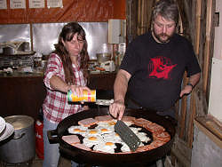

{kind=link}
|  |
| Image: the field kitchen. |
{kind=link}
For 16 days: Accommodation (Recreation room, place for a tent, restrooms with showers), 3 meals per day, support and training in small groups by experienced cavers, excursions and entrance fees for common activities, a CD with the course documentation, youth group insurance (health, third party liability, accident) for participants age 25 and younger for the duration of the camp. Please bring an international health insurance certificate to make processing easier.
For participants age 26 and older we strongly recommend to have their own insurance (health, third party liability, accident including salvage costs as offered for example for "Deutscher Alpenverein DAV"-members).
The advance payment is € 50.-. Please send it immediately after reception of the confirmation of course registration.
The rest must be send until June, 30th, 2016.
Please fill in the registration with printed letters, so we can get an error free list of participants, which we can distribute. You can also fill in the registration on your computer, but then print it, sign it and send it to the camp organizer in paper form.
Please send your printed registration by snail mail (because of the signature) to:
Petra Boldt
Hauptstrasse 4
89601 Schelklingen
Germany
Phone: +49-7394-1566
E-mail:
Closing date for registration is June, 30th, 2016.
Due to the limited capacity, we recommend early registration.
With the confirmation of the course registration you will get a detailed map with our location and a checklist, which things you should bring to the camp.